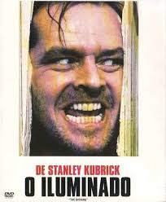

★ 8.4
1980
O Iluminado
Terror
Drama
Jack Torrance aceita um emprego como zelador de um hotel isolado nas montanhas durante o inverno, levando consigo a esposa e o filho Danny, que possui poderes psíquicos. Conforme o isolamento e o hotel sinister exercem sua influência, Jack mergulha em uma espiral de loucura que ameaça sua própria família.
▶ Assistir